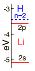

Lithium Energy Levels:Orbital Dependence
|
|
| The lithium 2s level is significantly lower than the 2p because of greater penetration past the shielding of the 1s electron. Both levels penetrate enough to be significantly lower than the n=2 hydrogen energy which they would have if the shielding were perfect. |  |
The 2s electron is lowered about 1.7 eV below the n=2 hydrogenic energy level of -3.4 eV which it would have if the shielding were perfect.
|
The illustration above uses the hydrogen wavefunctions, which are not exactly correct for lithium but can be used to obtain a qualitative understanding of the dependence of the electron energies on the orbital quantum number. If there were no shielding of the 2s electron, it would be exposed to the entire nuclear charge and have energy -30.6 eV. Modeling this situation by dividing the electron's time between perfect shielding and no shielding, the percentage of time inside the shielding is calculated to be about 6% for the 2s electron. The same model for the 2p electron suggests only about 0.5% of its time inside the shielding.
|
Index |